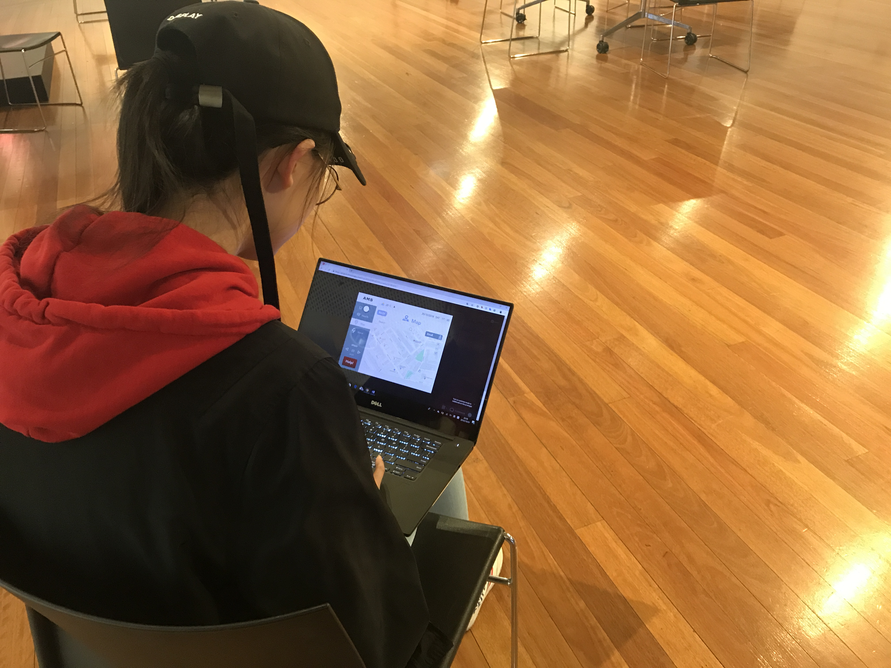
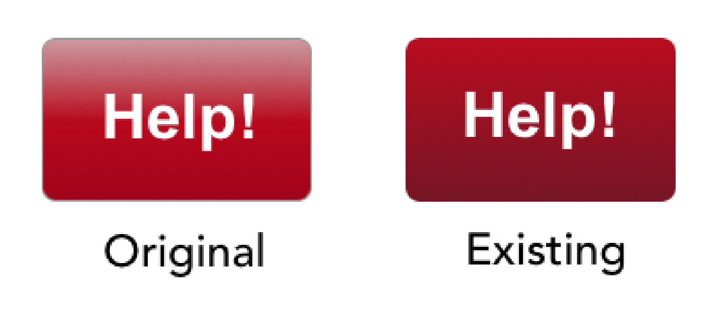
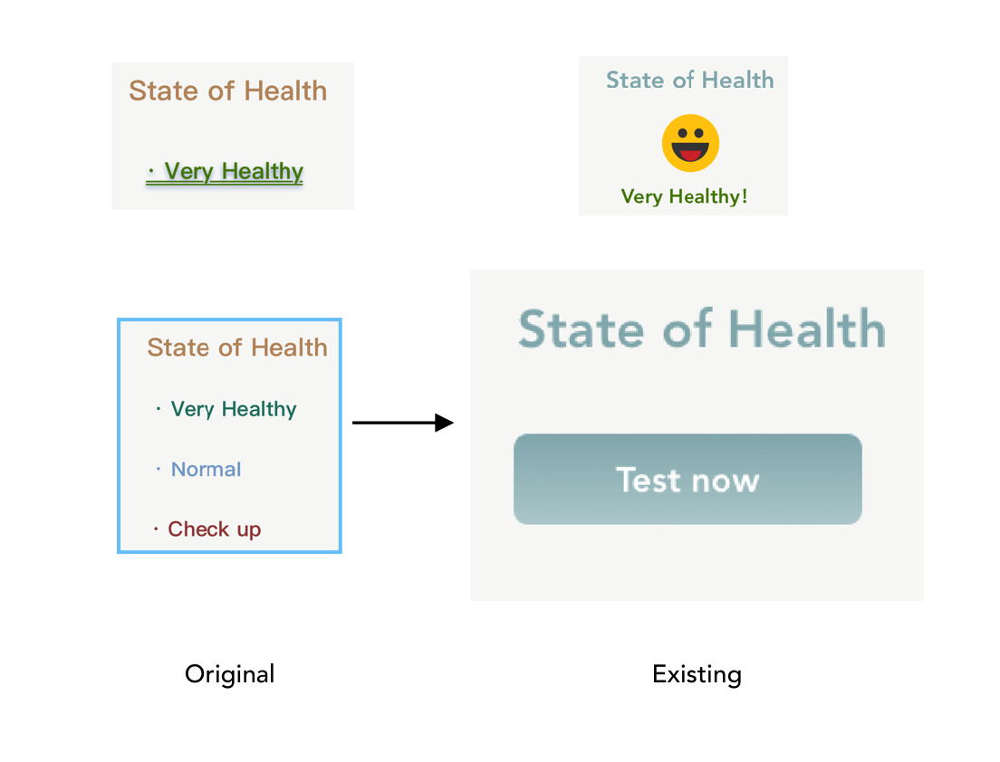

Compainion Website
Introduction
AMS autonomous mobility scooter is designed primarily for elderly, also the elderly diseases are also considered in designing their applications such as big icons and texts for presbyopia, medication reminders for dementia. Some special features to help users monitoring their health consideration (heartbeat, blood pressure etc.).
1. User testing
Based on the feedbacks from paper prototype and wireframe, there are some issues that need to test with users and find elderly personalized way to fix them in the final product. Firstly, text prompts are needed under the icons that can help elderly to get better understanding with the icons. Secondly, the interface should be very clear and as simple as possible. Additionally, users prefer AMS can bring them home with just a single button. Fourthly, the size of font in the interface can be change anytime for users with presbyopia. Finally, an emergency button should be put in an obvious position and included in every page of the screen. These are main functions we are focusing on when we are testing with users.
 Figure 1.1 - Mengyu using the map in AMS interface
Who did we test with? How and where did we test?
Mainly old people, some students with design background and designers. Because elderly are the target users of AMS, we tested with them first. Our group found that many old people like to go to Sport & Aquatic Centre, so we went there and tested our product with a couple who are over 50-year-old. There are three tester who are relatives of us, both are over 60. Design students and designers, we could easily find in Wilkinson building while they gave many suggestions about the visual style and typesetting. Invision was used in the test, the user seat in a chair pretends an old person riding AMS.
2. Result & Recommendations
Home
Because of the 2D colour used by most of the interface, the gradient colour of the "help" key seems too abrupt, and the user suggests using a slightly lighter colour. Because the icon is too small, the colour of the icon is too bright and there is no primary colour style that makes it difficult for users with presbyopia to use. The button lines of the page turning are very thin, and the user feels that it is not obvious enough. Separating the date and time makes the user feel uncomfortable.
We designed the “help” button with a gradient colour to make it obvious for user, so we changed it with a darker colour, but it is still a gradient colour. The icons changed to bigger vision with soft pastel colours and the date is put next to the time.
 Figure 1 - Help
 Figure 2 - State of health
Health management
There are some problems with typography and color. The big "back" key affects the overall aesthetics, and the three health test functions are crowded together that make the right side of the entire page look messy. After the test, only "very healthy" is displayed on the left side of the screen, and the left layout is very monotonous. Which makes the entire page looking inharmonious (2 participates).
We both agreed this opinion, so we change the layout of the page and added an emoji under “very healthy”.
Map
If the map can be enlarged, it can make the user see more clearly, and add the positioning function to let the user know the current location.(1 participate)
Even only 1 participate mentioned it, it is a good point to show where the user is.


Color
At first we chose the color we liked, but some colors may not be suitable for the elderly. On a website, people discuss the colors that older people like. “Older people can be drawn to soft pastels but they may not have the vitality of hue needed to stimulate the mind and mood. Eyesight problems can also impair how the colour is seen and what is seen. Softer shades of reds and oranges are warming and can help with circulation and energy levels. Peaches, apricots, warm tans, terracottas and pinks can also be used for this purpose. Reflecting on the past and thoughts of a spiritual future can also be reflected in colour choices. Soft blues, lavender mauves and violets are colours that connect to the spiritual or reflective mood. Studies carried out in nursing/rest homes indicate that soft pinky-beiges contrasted with soft blue/greens are soothing and peaceful. ”
3.Original Flowchart

4.Result & Recommendations
For the user to have a better interactive experience, drag mode should be flexible to move anywhere in the map rather than only show the page that they have done the action (That is a technical problem in Invision, we didn’t find the function). More features can be included in the interface to make testers feeling that product is in real, there are some buttons unable to use in the interface.
Furthermore, the button of changing font size can be clearer in the header that directly shows “A+” and “A-” rather than click “A”. In the health page, one tutor mentioned that “state of health” and the testing functions have a strange layout causing an ambiguous interface of the screen.
5. Final Flowchart

6.Invision
When user's heartbeat is higher than 125, the slowing speed page will automatically comes up. That is a single page in Invision.